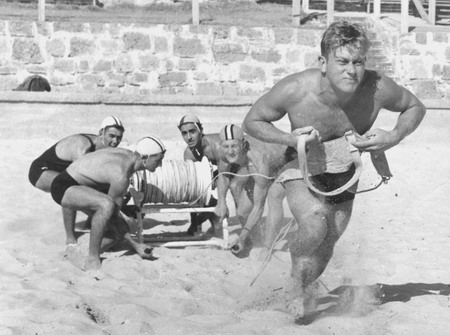
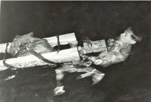
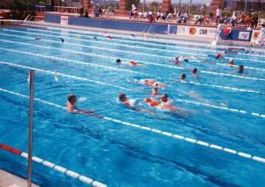

Historie Vodní Záchranné Služby
Počátky a první kroky
Začátek 20. století: Již na začátku 20. století bylo jasné, že je potřeba organizované pomoci na vodních plochách. V rámci tehdy existujícího Červeného kříže se začaly objevovat první snahy o zajištění bezpečnosti na vodě.
1936: Oficiální založení Vodní záchranné služby (VZS) Československého červeného kříže. První stanice vznikla u přehrady Vranov na Dyji, kde dobrovolníci poskytovali první pomoc a prováděli záchranné operace.
během první republiky a války
1930-1940: V tomto období docházelo k postupnému rozšiřování VZS na další významné vodní plochy, jako byly přehrady a velké řeky.
1945-1948: Po druhé světové válce se obnovují činnosti Červeného kříže včetně VZS. Je nutné obnovit ztracené kapacity a materiální vybavení.
Reorganizace a rozvoj v 50. a 60. letech
50. léta: Dochází k reorganizaci a systematickému rozvoji VZS ČSČK. V tomto období se začínají zavádět první specializované kurzy pro vodní záchranáře. VZS také získává nové vybavení, které výrazně zvyšuje efektivitu záchranných operací.
1960: Založení dalších stanic VZS po celé zemi, například na Orlické přehradě, Slapech či Lipně. Tím se výrazně zvyšuje dostupnost záchranných služeb na vodě.

70. a 80. léta – doba modernizace
70. léta: Pokračuje rozvoj infrastruktury a technického vybavení. VZS ČSČK začíná využívat motorové čluny a další moderní techniku. Organizace se začíná více specializovat a profilovat v oblasti záchrany na vodě.
1980: V tomto období je kladen důraz na odbornou přípravu záchranářů. Pořádají se náročné kurzy a školení, které zahrnují nejen techniky záchrany, ale i první pomoc a zdravotnické dovednosti.
Po roce 1989 – nová éra
1989-1993: Sametová revoluce přináší změny v celé společnosti, včetně VZS. Dochází k demokratizaci a reorganizaci Červeného kříže, který se přizpůsobuje novým podmínkám.
1993: Po rozdělení Československa vzniká VZS ČČK, která pokračuje v tradici a dále rozvíjí své aktivity v samostatné České republice.
Rozvoj v 90. letech a na počátku 21. století
90. léta: Nastává období intenzivní modernizace. VZS ČČK začíná používat nové technologie, jako jsou záchranné čluny s moderními motory, GPS navigace a další elektronika. Zároveň dochází k prohlubování mezinárodní spolupráce s partnerskými organizacemi v zahraničí.
2000: Zvyšuje se důraz na prevenci a vzdělávání veřejnosti. VZS ČČK pořádá kurzy plavání, první pomoci a bezpečného chování na vodě.
Současnost
21. století: VZS ČČK je moderní a profesionální organizací s celostátní působností. Má mnoho místních skupin a stanic po celé České republice. Organizace je vybavena nejnovější technikou a záchranáři jsou pravidelně školeni podle nejnovějších standardů.
2020: VZS ČČK se aktivně podílí na mezinárodních projektech a výměně zkušeností. Organizace je členem Mezinárodní federace červeného kříže a červeného půlměsíce a spolupracuje s dalšími záchrannými složkami v rámci Evropské unie.
Specifické aktivity a úspěchy
Prevence a osvěta: VZS ČČK pravidelně pořádá kampaně a akce zaměřené na pr evenci utonutí a bezpečné chování na vodě. Školí děti i dospělé v plavání a první pomoci.
Zásahy a pomoc: V posledních letech VZS ČČK zasahovala při řadě mimořádných událostí, jako jsou povodně a nehody na vodě. Organizace má dobře vycvičené týmy, které jsou schopny rychle a efektivně zasáhnout.
Spolupráce: VZS ČČK spolupracuje s dalšími složkami integrovaného záchranného systému (IZS), jako jsou hasiči, zdravotnické záchranné služby a policie. Díky této spolupráci je schopna poskytovat komplexní a koordinovanou pomoc při mimořádných událostech.